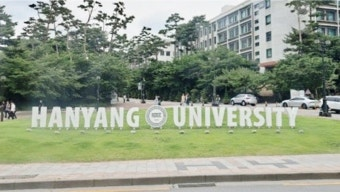
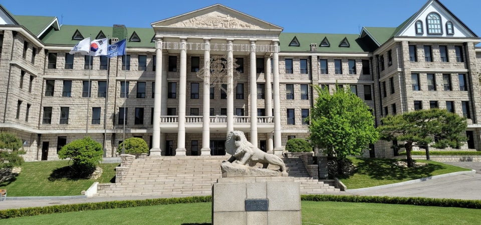

공학·자연 계열에서 최상위 선호도를 자랑하는 한양대학교(서울). 오늘은 한양대 수시 전형 구조와 대표 학과, 그리고 이번 수시를 어떻게 준비하면 좋은지 정리했습니다. 한양대는 최근 전형 간 중복 지원이 가능해지는 등 변화가 있어 미리 파악해 두면 유리합니다.
한양대 수시, 어떤 전형이 있나요
한양대(서울) 수시는 학생부종합의 비중이 가장 크고, 학생부교과, 논술, 실기로 구성됩니다. 특히 학생부종합은 성격이 다른 세 가지로 나뉩니다.
- 학생부종합 (추천형) — 고교 추천 기반 전형입니다. 내신 교과 성적과 학생부 전반을 함께 평가합니다.
- 학생부종합 (서류형) — 면접 없이 서류(학생부)만으로 평가합니다. 세특·활동의 학업 역량이 촘촘하게 드러나야 유리합니다.
- 학생부종합 (면접형) — 서류평가 후 면접을 통해 선발합니다. 최근 선발 인원이 크게 늘었습니다.
- 학생부교과 — 내신 교과 성적 중심의 전형입니다.
- 논술 — 논술고사 90% + 학생부종합평가 10%로 선발하며 수능최저를 적용합니다. 이과 논술은 수학·과학 문제 해결력이 핵심입니다.
주목할 점은 추천형·서류형·면접형 간 중복 지원이 가능해졌다는 것입니다. 같은 대학 안에서 성격이 다른 전형에 함께 지원하며 합격 확률을 높일 수 있게 되었습니다. 이른바 "한양대 수시등급" 합격선은 전형·학과별로 크게 다르므로 당해 입결을 반드시 확인하세요.

한양대 대표 학과·모집단위 (키워드)
한양대(서울)의 대표 모집단위는 다음과 같습니다. 특히 공과대학의 위상이 높습니다.
- 공과대학 — 건축학부, 건설환경공학과, 도시공학과, 자원환경공학과, 융합전자공학부, 전기·생체공학부, 신소재공학부, 화학공학과, 생명공학과, 유기나노공학과, 에너지공학과, 기계공학부, 원자력공학과, 산업공학과, 미래자동차공학과, 데이터사이언스학부, 컴퓨터소프트웨어학부, 정보시스템학과, 반도체공학과
- 자연과학대학 — 수학과, 물리학과, 화학과, 생명과학과
- 의약·간호 — 의예과, 간호학과
- 인문·사회 — 국어국문학과, 영어영문학과, 중어중문학과, 독어독문학과, 사학과, 철학과, 연극영화학과, 미디어커뮤니케이션학과, 정보사회미디어학과, 관광학부
- 상경·정책 — 경제금융학부, 경영학부, 파이낸스경영학과, 정책학과, 행정학과, 정치외교학과, 사회학과
- 사범대학 — 교육학과, 교육공학과, 국어교육과, 영어교육과, 수학교육과, 응용미술교육과
- 예술·체육 — 성악과, 작곡과, 피아노과, 관현악과, 국악과, 무용학과, 스포츠과학부
공학 계열은 수학·과학 심화 이수와 탐구 활동이, 인문·상경은 독서·언어·사회 탐구 역량이 특히 중요합니다.
이번 수시, 한양대는 이렇게 준비하세요
- 1) 내신·세특 완성도 점검 — 서류형은 면접이 없어 학생부 하나로 승부합니다. 세특에 학업 역량과 진로 연계가 분명히 드러나야 합니다.
- 2) 중복 지원 조합 짜기 — 추천형·서류형·면접형을 전략적으로 조합해 지원할 수 있습니다. 내 강점(교과/서류/면접)에 맞춰 배치하세요.
- 3) 면접 대비 — 면접형은 서류 기반 질문에 논리적으로 답하는 훈련이 필요합니다.
- 4) 논술 지원자는 수능최저 관리 — 이과 논술은 수학·과학 실전 감각과 수능최저 충족이 관건입니다.
한양대는 어떤 학교인가요
한양대학교는 공학 명문으로 널리 알려져 있으며, 산학협력과 실용 학풍, 강한 동문 네트워크가 특징입니다. "사랑의 실천"이라는 교훈 아래 현장 중심·실무 역량을 강조하는 분위기가 강합니다. 공학뿐 아니라 경영·정책·사범 계열도 경쟁력이 높아, 지원 학과의 성격에 맞는 준비가 합격을 좌우합니다.
※ 모집 인원·수능최저·전형 일정 등 세부 사항은 해마다 달라질 수 있습니다. 지원 전 반드시 한양대학교 입학처 모집요강에서 최종 확인하세요. 본 글은 학부모·학생의 이해를 돕기 위한 정리 자료입니다.